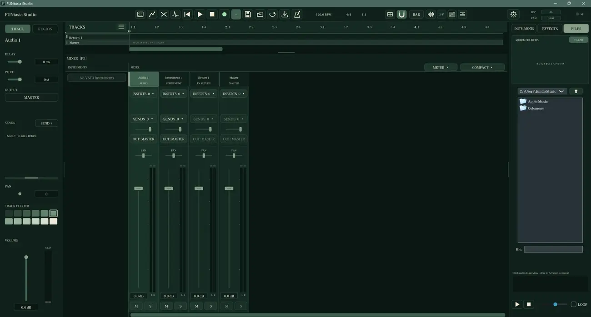
ミキサー
トラックごとの音量バランスと、音をまとめる考え方を学べます。
FUNtasia Studio / 無料・学習用オーディオソフトウェア
音楽制作の仕組みを、見て、触れて、試しながら学ぶためのスタジオ。必要なのは好奇心。創作の方法も、学ぶ人の経済事情も、ひとつの型にはめません。
01 / 自分らしいスタジオに
Colour Themes
落ち着いたチャコールから深いグリーンまで、好みに合わせて画面のカラーテーマを変更できます。同じ操作画面でも、色が変われば気分も変わる。各画像をクリックすると大きく表示できます。
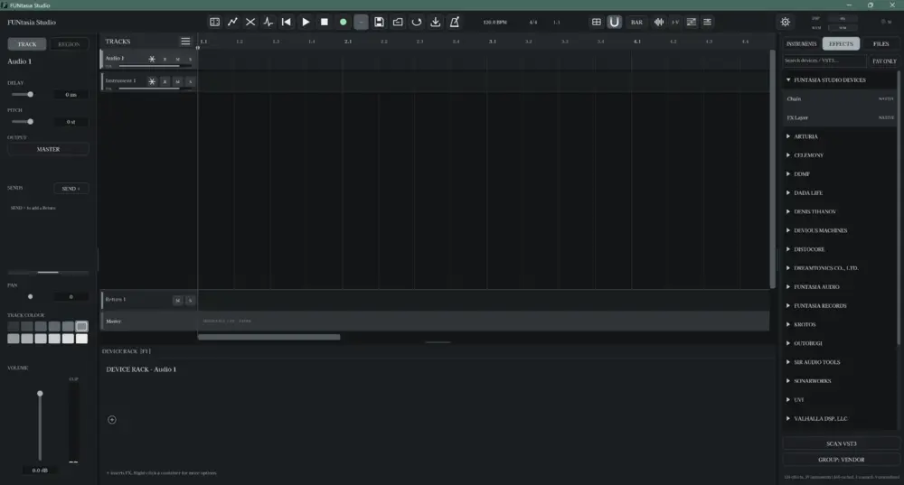
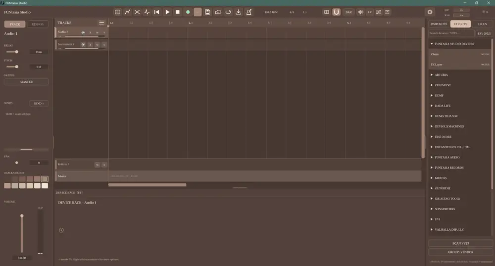
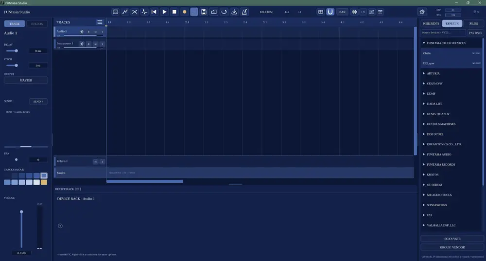
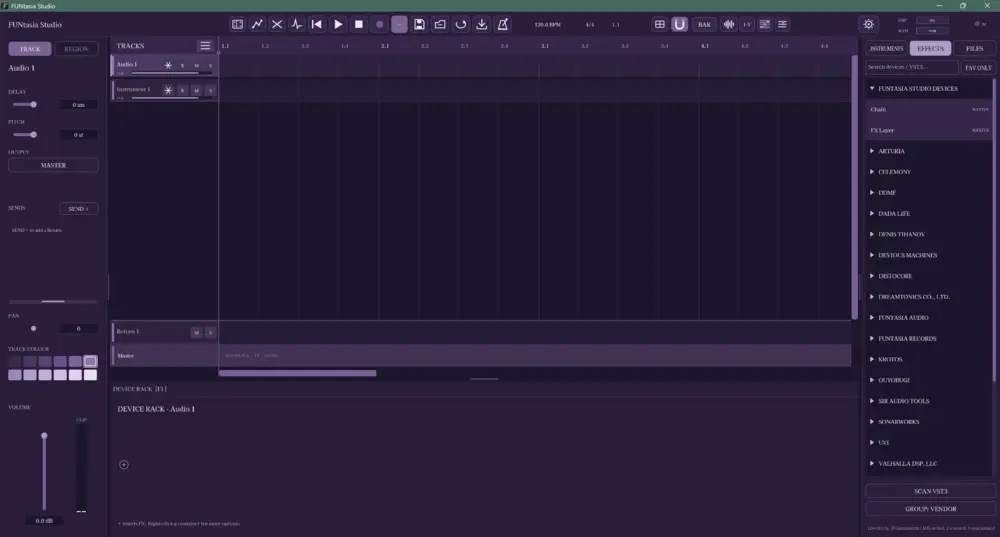
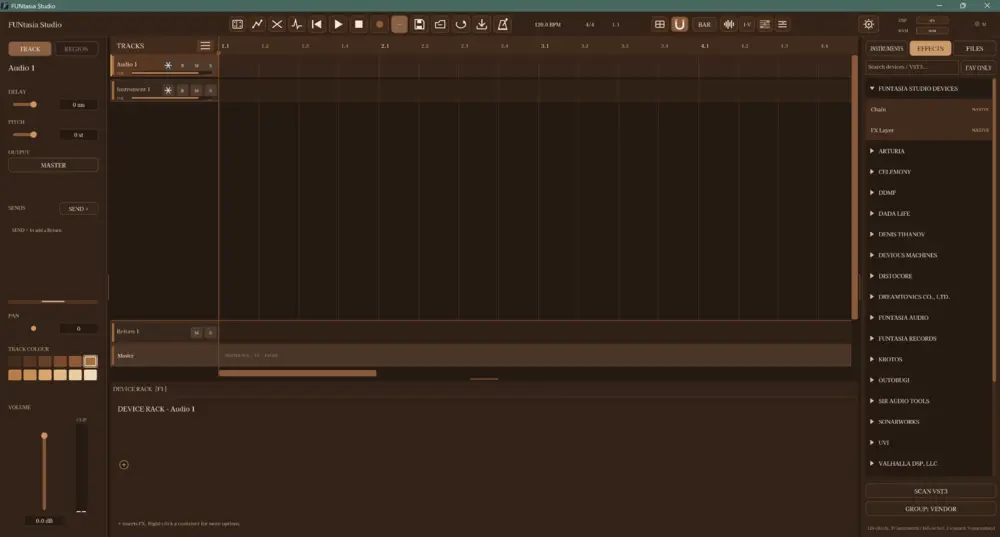
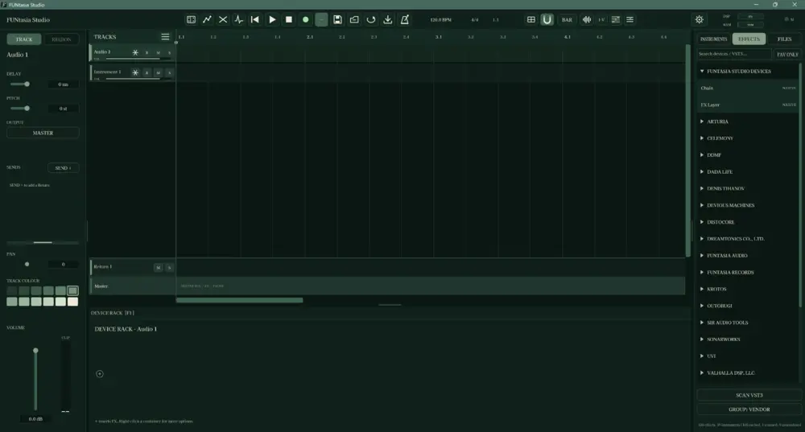
すべて実際の画面です。小さな画面では左右にスクロールして比較できます。
02 / ツール切り替えに追われない
Modern Workflow
ノート、リージョン、各種パラメーターを画面上で直接扱える編集環境。細かな操作のたびに専用ツールを何度も切り替える必要を減らし、アイデアから編集へ自然につながることを目指しました。
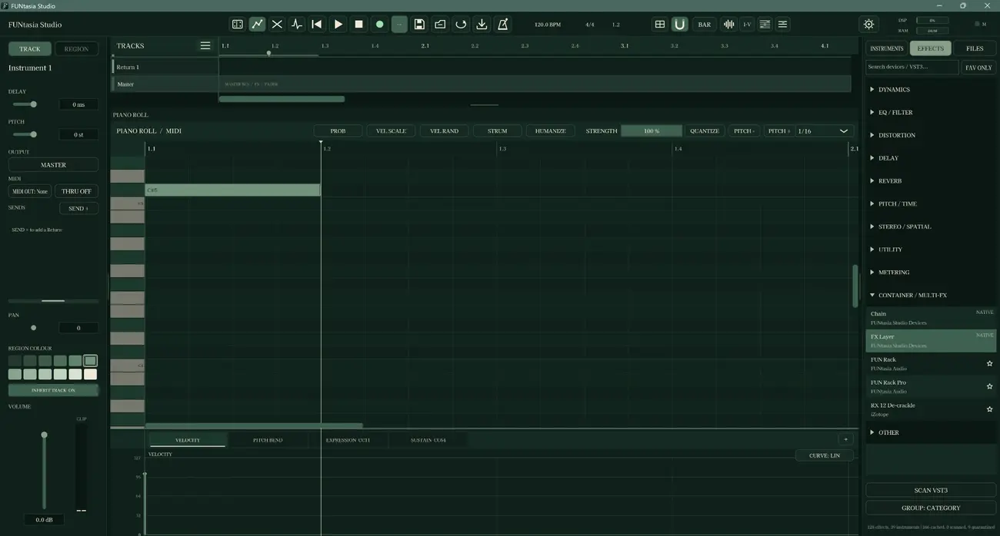
03 / 音作りの幅を広げる
Creative Control
楽器やエフェクトを組み合わせ、音量を整え、変化をオートメーションで描く。単に操作を覚えるだけではなく、何を変えると音がどう変わるのかを、自分の耳で確かめられます。
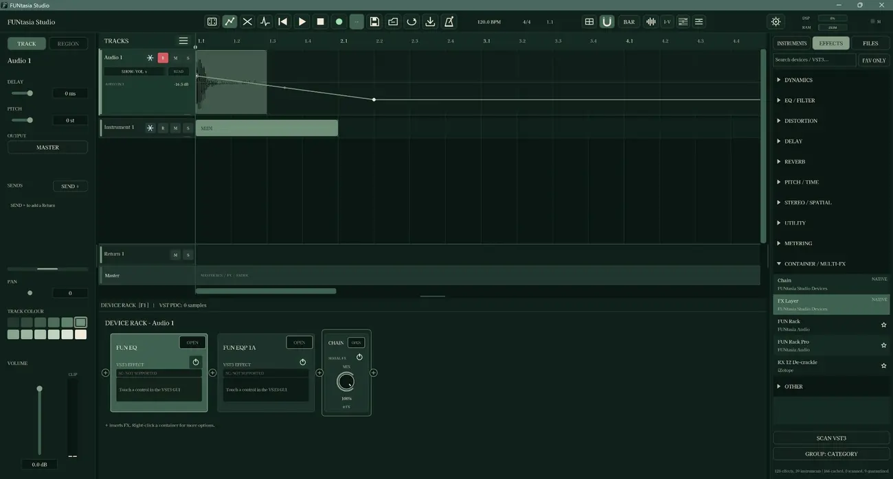
04 / つながる制作環境
Learn by Doing
音を並べる・加工する・重ねる・バランスを整える。それぞれの役割とつながりを、実際の画面を通して学べます。

トラックごとの音量バランスと、音をまとめる考え方を学べます。
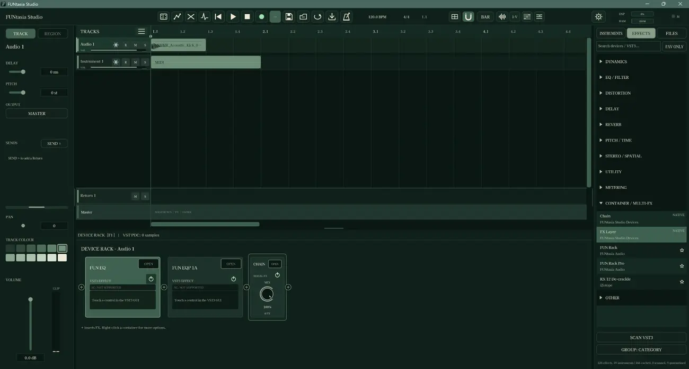
楽器・エフェクト・Chain・FX Layerを見ながら、処理の組み合わせを探究。
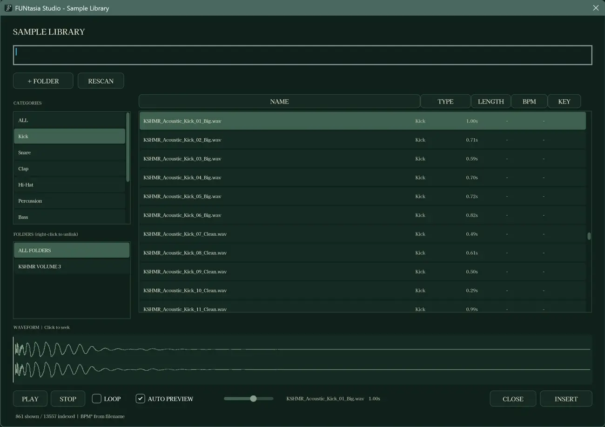
音素材を探し、アイデアの出発点になる音に出会えます。
05 / 音楽理論も触れて学ぶ
Music Theory Tools
キーやコード、スケール、ボイシングを視覚的に確かめられる学習ツールも用意。初めて音楽理論に触れる人にも、基礎を見直したい人にも、試して理解するきっかけを作ります。
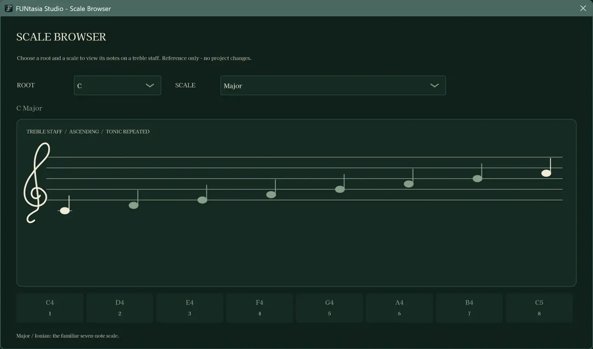
調性や音階の関係を調べ、曲作りにどう生かせるかを考えます。
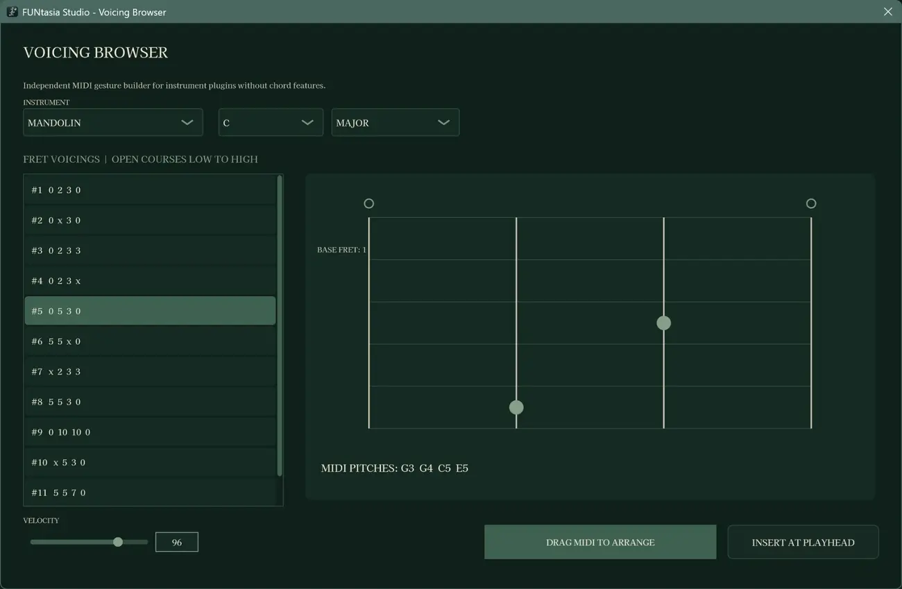
同じコードでも音の配置で響きが変わることを探究できます。
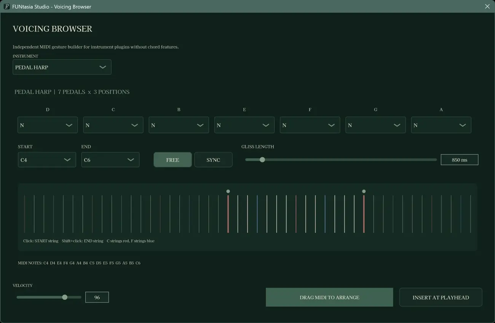
ボイシングや音楽理論に関する学習機能の中で、ハープならではの視点にも触れられます。
FUNtasia Studioの存在理由
これから音楽を始める若いクリエイターも、予算に余裕がない方も、十分な環境を持つ方も。誰もが、同じ入口から音楽制作の仕組みを学べるように。FUNtasia Studioは無料で提供する学習用ソフトウェアです。
マスタークラス教材の閲覧や、制作の基本操作・音楽理論を体験するための場所。完成作品の保存を保証する業務用DAWとしての提供ではありません。
それぞれ違う環境から、等しく学べる場所へ。
06 / 学習を始めよう
First Public Beta · 2026
FUNtasia Studio Beta 1.0.0
Windows向け・無料の学習用アプリケーション。配布ZIPにはインストーラーとドキュメントが含まれます。詳細と注意事項はGitHubのリリースページをご確認ください。
07 / 開発活動へのご支援
Support the Studio
FUNtasia Studioは、経済状況に関係なく、誰もが音楽制作の仕組みを学び、試せるように無料で公開しています。この方針を大切にしながら、学習の場を育てていきたいと考えています。
ソフトウェアの開発には、機材や制作環境の維持だけでなく、多くの時間と費用が必要です。活動の趣旨に共感し、支援できる方は、ぜひ力を貸してください。
Amazonほしい物リストには、開発に必要な機材に加え、日々の活動を支える食品や日用品なども掲載しています。リストからの贈り物は、開発を続ける大きな助けになります。
Amazonほしい物リストから支援する ↗ご支援はすべて任意です。支援の有無にかかわらず、FUNtasia Studioは無料で利用できます。無理のない範囲で応援いただけたら嬉しいです。